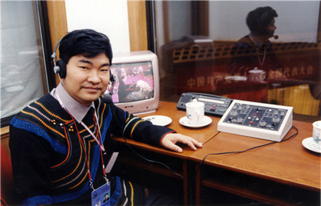

王昌富 在汉彝间绘一道彩虹
来源：中华儿女报刊社

站在秋天长风下的王昌富在中国民族语文翻译局大门口缓慢踱步，西装革履，颇有学者风范。“我是彝族人，来自大凉山。”面带微笑，声音爽朗。他的彝族名是且萨乌牛，尽管这个名字在工作和生活中很少有人叫，他依然会坚持在他的个人专著上署上：且萨乌牛。就像是对彝族文化的坚守与信仰。
王昌富是著名的彝族历史文化研究学者，中国民族语文翻译局二级译审。30多年来，他潜心彝族文化研究，先后有《凉山彝族礼俗》《彝族妇女文学概说》和《彝族古代文明史》等个人专著以及数十篇论文问世。参加组织翻译、审定彝文版《毛泽东选集》《邓小平文选》《江泽民文选》《资本论》《习近平系列重要讲话》等重要文献数十种。他创作编剧的彝族电影剧本《支格阿鲁》《布阿诗嘎薇》拍成电影，公开发行。
这样的成就，在王昌富儿时，是从来没有想过的。
艰辛的求学年代
王昌富1961年火把节出生于四川省盐源县。“彝族人重死不重生，彝族人大都不记得自己的生日，他们会用那一年的某个事件去记忆自己的大概生辰。”王昌富说。他的生日那天正好是彝族的传统节日火把节，也因此成为他记忆的节点。
盐源县隶属于四川省凉山彝族自治州，王昌富所在的小山村海拔较高，交通不便，生活环境较差，“我妈妈生了七个孩子，有五个都因为缺医少药，夭折了，只有生在新中国的我和哥哥才活了下来。”他读书时，父母已年过半百，而且正值我国困难时期，童年的王昌富也品尝到饥贫交加的滋味。
王昌富的艰辛求学之路如今看来，就像一部励志剧。少年时期的经历，他也曾经讲给他的女儿听，女儿会听到落泪。这是现在物质充裕的年代里难以想象的，但在王昌富的少年时代，饥饿与贫困，就是他每天都要面对的问题。
王昌富自小学习踏实认真，小学时成绩优异，送到汉区读初中，因为作文出色，初中时被县文教局局长钦点送到县城读高中。“高中两年，我每天想的第一件事是，今天的饭如何解决？”他靠挖药、砍柴、卖柴，攒钱勉强度过了第一年。高二，学校的围墙塌了，学校得知他的状况，让他住在学校围墙旁边的简易工棚里看守，每天两毛钱，他的吃饭问题得以稍稍缓解。“正值长身体的时候，我基本上吃不饱。有一天，就想，我看看吃饱了是什么滋味，那一天早上，我一口气吃了五个馒头（平时只敢吃一个），不敢再吃了，午饭和晚饭没着落了。”
高考的那一天，他记得很清楚，如果他吃了午饭去考试，那天下午他就没有钱坐车回家了，没办法，只好忍着饥饿，打算考完了最后一门再回家。有个同学看出了他的窘境，硬拉他回家吃饭，到了同学家，家里不知有客人来，只留了一碗饭，同学热心地分了他一半吃。“这半碗饭，我记了一辈子。”王昌富说。后来，考上大学，工作后第一个月发工资，54元钱，他第一件事就是找到那位同学，硬塞给他20元钱，“真的，那顿饭，特别温暖。”
多年寒窗苦读终有回报，他被西南民族学院录取，选择了中文系彝族语言文学专业。因为学业优异，毕业时，他被选为四川省应届毕业优秀大学生。系领导找他谈话，希望他留校任教，当时他实习所在的《凉山日报》也希望他留下来当记者。这些选择如此诱人，都是他内心特别向往的，可是，他铭记着彝族人的古训——自古小儿养老。毕业后，他回到本县政府办公室任文字秘书。那是1984年。
“如果按照这样的节奏往前走，或许我会走向另外一条令人羡慕的从政之路。”王昌富说。因为工作能力出色，24岁任副区长，成为组织重点培养的“第三梯队”中的一员——他年轻，又是党员，又是彝族优秀知识分子，很难得。不久，他升任办公室主任的调令也即将下达。正在这时，凉山州民干校正缺翻译老师，迫切想要他去，在通畅的仕途和深爱的专业面前，再三考虑，他决定去民干校当老师。在众人不解的目光中，他成为一名老师，一名彝文翻译老师。
王昌富永远记得那一天，那基本上是改变他命运的一天，1986年2月的最后一天，他得知要去北京参加全国“两会”翻译，一瞬间，他有些不相信，他赶忙找人确认，是真的，要他当晚走，第二天到达成都。他马不停蹄地奔向学校，预支出工资，抓起几件衣服直奔火车站。3月2日，王昌富第一次来到北京，在天安门广场，迎着春风，这位25岁的年轻人激动万分。他没有想到自己一个山里放牛娃，那么年轻，就能来到梦寐以求的天安门广场，就有了在人民大会堂做“两会”翻译的机会。他更没有想到，这一趟北京之行，从此与北京，与“两会”结下了不解之缘。
逐渐成长的彝族专家
1950年代，中央民委设民族语文翻译局，下设蒙古、藏、维吾尔和彝等语言翻译室。“文革”期间被撤销。1984年国家民委批准恢复彝文翻译室。1986年3月15日，在北京进行全国六届四次人大、政协会议民族语文翻译期间，由时任中国民族语文翻译局党委书记、局长李大万宣布恢复设立彝文翻译室。这一年，也是王昌富第一次来北京做“两会”翻译工作，他精准的校稿水平，良好的协调能力，以及与拣字车间的融洽配合给负责筹建彝文室的领导留下了很好的印象。“两会”翻译任务结束，王昌富准备回原单位，李大万局长亲自找他谈话，告知中国民族语文翻译局想把他留在彝文室。就这样，王昌富成为彝文室恢复设立以来第一批干部。
自1986年到2006年的20年时间，王昌富参加了中国共产党历次全国代表大会、全国“两会”的彝语同声传译工作，每到重要的会议翻译工作时，都有王昌富忙碌的身影，他先后主要承担调度、同传、翻译、审定和组织领导工作。在工作中迅速成长。他反复说，这是和党的培养、领导的关心和同事们共同的努力分不开的，个人只做了自己应做的事情。同声传译要求高，责任重，出不得半点疏漏。每一次，王昌富和同事们都仔细译校，一遍遍核实，凭借扎实的专业功底和严谨的工作态度，在20年的同声传译中，王昌富做到了零疏漏、零差错，圆满完成了任务。自2006年起，为培养更多年轻人，让更多年轻人有锻炼机会，他退出了一线同声传译工作，将更多经历投入审定工作。全国两会的翻译工作，是彝文室的重中之重，每年全国两会期间，他们都从成都专程来北京，为两会的彝文文件翻译和大会同声传译工作。彝文室恢复设立30年来，他和彝文室的同事们共同努力，翻译出版了近百部党和国家重要文献。
每年除了保质保量地完成全国重大会议的翻译工作外，王昌富还带头参加了《毛泽东选集》《邓小平文选》《江泽民文选》等大型书目的彝文翻译和审定工作，他游弋在卷帙浩繁的书海中，在汉文与彝文之间架起了一道沟通的彩虹。
每一套领袖巨著的翻译，都意味着一次浩大的工程，而这项工程没有可以参照的文本，每一套书系都是一次全新的探索，王昌富深知自己翻译的责任重大——此时的翻译成果不仅是现在学习贯彻的著作，也是后世的参考文献，他们是在为彝文留存珍贵的文化宝库！
《毛泽东选集》《邓小平文选》这两套书系先后按照中国民族语文翻译局的规定要求出炉了。到了翻译出版《江泽民文选》时，适逢2008年，那一年，是改革开放三十周年，也是中国奥运年，而对于王昌富和他的同事们而言，记忆深处念念不忘的，是在那场举世瞩目的汶川大地震后，他和同事们在为翻译《江泽民文选》工作继续进行下去的日日夜夜。
“那一天，我像往常一样上班，忽然感觉脚下一阵晃动，头顶的灯，书桌上的书，都仿佛要迫不及待地换一个地方，我猛然意识到，地震了，我坚持在办公室，招呼着同事们一个个飞奔离开大楼，我们的家和办公室都在同一幢大楼里，等安顿了所有的同事和老人安全离开大楼后，我冲进我家，想带着妻子和女儿下楼时，剧烈的摇晃还在进行，我们一家三口紧紧地抱着躲在卫生间里，那一刻想，即便是真的逃不掉，同事们已安全离开，我一家人也在一起，也是有幸了。”王昌富回忆着“5.12”地震时他和同事们在成都的经历。
还好，一阵地动房摇、惊心动魄过后，家人和同事都安好。他们在四川省体育馆过了一个无眠的夜，听着电视台播报的不断攀升的伤亡数字，内心惶然。
那时正值《江泽民文选》翻译进行中。出版时间在即，而工作场地因为余震不断，已不能回办公室上班，怎么办？中国民族语文翻译局的领导根据实际情况，让他们可以放缓一下节奏，彝文翻译因为突发情况，出版可以延后。王昌富想了想，不行，作为七种少数民族语言翻译中的一个，绝对不能延后，不但不能延后，还要把工作做到前面，做得更好。王昌富身上有一种特质，做事认真，干什么都要做得最好。主意一定，他立即召集彝文室全体人员，在避难场所四川省体育馆就地召开会议，向大家传达了这一想法，同事们都齐心响应，在频频的余震中，在帐篷里、在露天坝展开紧张而高效的翻译审定工作。
“记得在录入排版时，我把录排人员安排在一楼距离门最近的房间，在余震不断的情况下，继续工作。录排人员是个年轻的女同事，为了给她壮胆，我就站在她身后，一有余震，立即叫她跑，躲在外面的空旷处，一个录入排版周期下来，我们从屋里跑到屋外不知多少次。”王昌富说。就是在那样的工作环境下，《江泽民文选》的彝文翻译艰难地完成了，不但没有延后交稿，而且成为七种少数民族语言中较早完成任务的翻译室。彝文室领导的凝聚力，集体的战斗力，由此可见一斑。
像保护大熊猫一样保护彝族文化
王昌富将大量的业余时间投入到彝族文化的研究中。曾经有很多次，有人对他说，如果当初，你没有选择从事翻译工作，而是继续在从政的道路上走，或许……一连串的设想。王昌富总是笑笑，他知道，如果上天再给他一次选择的机会，他也一定会毫不犹豫地选择现在这条路的，做一名彝文翻译，做一名彝族文化的研究者，没有什么能让他为此更为痴迷，更为投入的事业了。
王昌富有着很深的民族自豪感，也因此，特别珍视本民族文化的传承与发扬光大。“在世界一体化，世界大同的发展趋势下，少数民族语言的消亡或许是不可逆转的。我们所要做的，就是让语言消亡来得慢一些，再慢一些。”王昌富略有伤感。每每意识到这一点，都让王昌富的文化研究的步伐更为紧迫，他希望能做更多的田间调查，能做更多的翻译工作，让更多的人了解彝族灿烂的文化，为这个星球美丽的语言多留驻一份档案。就是抱着这样一份抢救本民族文化的历史责任感，王昌富在繁重的工作之余，推出了一本本专著和译著，一篇篇论文和译作。迄今为止，王昌富已经推出了三本个人专著：《凉山彝族礼俗》《彝族妇女文学概说》和《彝族古代文明史》。与妻子吉格阿加合作翻译出版了《我的幺表妹》《玛穆特依》《妈妈的女儿》等三部彝族名著。他编写的电影剧本《支格阿鲁》《布阿诗嘎薇》已拍成电影，公开发行，并获得若干奖项。他开启三星堆与彝族研究之先河。目前还在整理他和妻子吉格阿加的论文，将他们有关彝学和翻译研究的论文60篇集辑出版。而这些都是他自费的，更令人钦佩！他所做的一切都期待通过更多的渠道让人们更加了解彝族。
“我希望有一天，当彝族文化消亡时，人们可以从我的著作中找到彝族的历史文化足迹，”王昌富说，“现在，人们常说，要保护大熊猫，因为它们是濒危动物，很珍贵。我觉得彝族文化也是一种珍贵的财富，并受到时代的冲击，我们要像保护大熊猫一样保护彝族文化。”
王昌富的彝文翻译和研究工作还在继续。正如他所说的，当好汉彝文化的桥梁，他正在为保护和弘扬彝族文化做全部的努力，他要让这一悠久的彝文，这一美丽的彝语，在这座星球上，留存得更久一些，更远一些。（记者/王海珍）